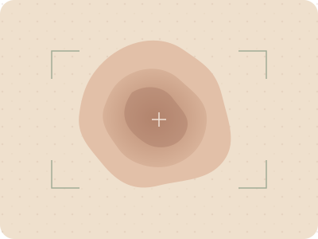

辨識什麼？
以 HAM 七分類為研究範圍，觀察不同皮膚病灶影像的分類分布。
7 個研究類別SKIN IMAGE RESEARCH / 01
讓皮膚影像辨識的過程更清楚。
從分類分布到研究方法，一起理解模型的判斷與限制。
學生專題・研究展示用途・不提供醫療診斷

觀察影像特徵以 HAM 七分類為研究範圍，觀察不同皮膚病灶影像的分類分布。
7 個研究類別比較 HAM、BCN、PAD 不同來源的表現，研究資料差異對模型的影響。
跨資料來源泛化用機率條與簡短說明呈現輸出，並預留後續視覺解釋的位置。
讓結果更容易理解INTERACTIVE DEMO
上傳影像或載入示意圖，體驗完整的結果閱讀流程。
正在確認本機服務；不會載入模型。
真實推論時才傳至本機服務；不保存影像。
選擇模型與影像後，執行研究推論。
你將看到分類分布、簡短解釋與視覺化預留區。
七類中最高分 待推論
七類分數總和為 100% · 不等於疾病確診機率
這裡預留 Grad-CAM 疊圖與原圖比較。
尚未串接，不以模擬熱力圖代替實際解釋。
研究用途；分數尚未校準，不代表醫療診斷機率。真實模型執行預設關閉，請依本機服務狀態啟用。
BEHIND THE MODEL
ImageNet 預訓練初始化
已建立原 Seed1／三 Seed 等權推論介面；權重只由本機服務依核定模式載入。
AKIEC、BCC、BKL、DF、NV、VASC、MEL。未納入的疾病與正常皮膚，也可能被分到既有類別。
先從 ImageNet 學習通用影像特徵，再進行本專題的分類訓練；不代表已具備臨床診斷能力。
影像品質、資料來源與類別涵蓋範圍都會影響輸出。這個展示頁不提供臨床效能主張。
THE RESEARCH PROCESS
把資料、學習與評估分開，讓每一步都有清楚的用途。
統一類別、檢查重複影像，區分 Train、Validation 與 Test。
資料治理模型從訓練影像更新參數，學習影像特徵與類別之間的關係。
模型訓練依驗證表現選擇模型，觀察跨來源差異；Test 保留作最終評估。
Validation ≠ Test顯示七類分布與限制，支援原 Seed1 及三 Seed 等權集成；GPU 一致性驗證另行記錄。
本版展示位置